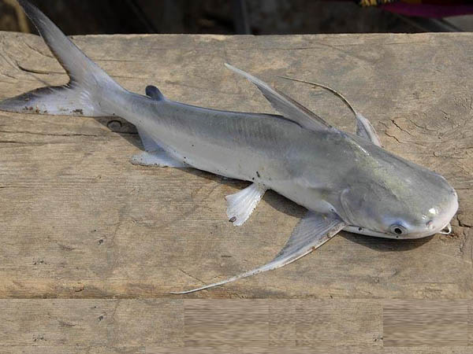
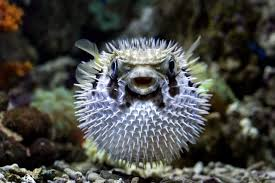

.png)
Praia da Daniela
Introdução
A Praia da Daniela é uma das praias mais belas e tranquilas de Florianópolis. Localizada na região norte da ilha, entre a Praia do Forte e a Praia de Jurerê, a Praia da Daniela é um refúgio para quem busca um lugar tranquilo para relaxar e aproveitar a beleza natural da região. Com uma extensão de aproximadamente 1 km, a Praia da Daniela é uma praia de mar calmo e águas claras, o que a torna ideal para a prática de atividades como stand up paddle, caiaque e natação. Além disso, a Praia da Daniela possui uma natureza exuberante, com uma bela vista da Ilha do Arvoredo e da Baía dos Golfinhos. A praia é cercada por uma vegetação nativa e uma área de preservação ambiental, o que garante um clima tranquilo e uma paisagem deslumbrante. A praia oferece uma infraestrutura básica, com algumas opções de bares e restaurantes, mas mantém um ambiente sossegado, sendo perfeita para quem busca fugir da agitação das praias mais movimentadas.
Especies
Bagre
https://cetesb.sp.gov.br/blog/2016/01/27/incidencia-de-ferimentos-causados-por-ferrao-de-bagre-preocupa-turistas/
Siluriformes (conhecido também como bagre), peixe comumente encontrado em costeiras tropicais e subtropicais em águas de pouca profundidade, possuindo o fundo arenoso ou lodoso. Tem como principais características ser um peixe de uma certa facilidade de ser pescado, ou seja, é um peixe característico da pesca esportiva, além de ser um peixe que consegue viver tanto em águas limpas tanto em águas com lama. Por fim sobre a alimentação do bagre, ele como desde caranguejos, pequenos peixes ou até mesmo plantas;
Corvina

https://www.cpt.com.br/artigos/peixes-de-agua-doce-do-brasil-corvina-plagioscion-squamosissimus
Plagioscion squamosissimus (conhecido também como Corvina, Pescada-Branca e Pescada-do-Piauí) o Corvina é um peixe que habita poços, remansos e reservatórios, vivendo em lugares fundos e de meia água. Se caracteriza pela coloração prata azulada, boca oblíqua, com um grande número de dentes recurvados e pontiagudos, possui também espinhos nas nadadeiras e duas nadadeiras dorsais. Pode alcançar mais de 50 cm e atingir até os 4,5 kg.
Parati
http://www.klimanaturali.org/2011/05/peixe-parati-mugil-curema.html
Mugil curema (conhecido também como Parati) é um peixe da família da tainha (Mugilidae), tem por hábito nadar em grupo e em águas rasas. É uma espécie costeira que vive perto da superfície, nas áreas de recifes, praias, estuários e lagoas salobras. Alimenta-se de micro-organismos e algas principalmente. Por ser da família Mugilidae tem um importante valor comercial para Florianópolis em geral, sendo também cultivada em aquicultura.
Baiacu-ará
https://mundomarinhobr.blogspot.com/2012/03/baiacu-arara.html
Lagocephalus laevigatu (conhecido também como baiacu-ará ou “Smooth puffer”), é um peixe encontrado no oceano Atlântico e costuma nadar entre 0-180 metros de profundidade. vivendo em substratos com areia e lama de baixa profundidade e são ovíparos. Apesar de serem venenosos como outros peixes de sua família, ele ainda é comercializado e seu estado de preservação é pouco preocupante (LC).
Tainha

https://engeplus.com.br/noticia/economia/2016/epagri-pesquisa-criacao-de-tainhas-em-agua-doce
Mugilidae (conhecido também como tainha), peixe comumente encontrado em águas costeiras e estua-rinas, geralmente em locais rasos em cardumes perto das superfícies. Tem como principal característica ser um grande ativo comercial de várias regiões, como por exemplo Florianópolis, além de ter como ter comportamento migratório sempre se movendo para águas mais quentes durante o período do inverno e retornando ao seu local de reprodução no verão, configurando assim a famosa safra da tainha;
Baiacu
https://olhardigital.com.br/2024/02/12/ciencia-e-espaco/baiacu-e-perigoso-entenda-por-que-peixe-e-venenoso/
Tetraodontidae (conhecido também como baiacu), peixe comumente encontrado em formações coralinas. Tem como principal característica conseguir inflar o seu corpo, fazendo isto engolindo água ou ar, possuem o hábito de buscar alimentos no período noturno em áreas de vegetações marinhas e por fim possuem veneno que já ocasionou vítimas fatais, isso porque atingem os nervos vasomotores causando uma paralisia dos músculos responsáveis pela respiração;
Papa-terra

https://www.borapescar.com/blogs/betara/
Menticirrhus americanos (conhecido também como Papa-Terra ou Betara), peixe comumente encontrado em canais formados nas costas marítimas, geralmente em locais mais fundos, por isso se encaixam como peixes demersais, porém possuem temporadas em que o Papa-Terra se encontra mais perto da beira do mar, geralmente acontecendo isto no verão. Carne muito saboroso de acordo com os amantes de peixes, tem como principal hábito ser um predador, se alimentando de vários tipos de alimentos como pequenos crustáceos, moluscos, camarões, pequenos peixes, entre outros;
Carapicu

https://paginasdabio.ufpr.br/carapicu/
Os Eucinostomus gula, popularmente chamados de carapicus como muitas espécies de peixes, possuem cromatóforos (células especializadas que permitem ajustar a sua coloração) , oque permite mudarem a intensidade de seus padrões de cores, os machos podem exibir cores vibrantes para atrair fêmes, podem alterar também sua coloração em resposta a ameaças ou para se misturar com o ambiente, fornecendo-lhes camuflagem contra predadores ou presas. Os carapicus são comumente encontrados nas águas costeiras do Oceano Atlântico ocidental, desde a Flórida até o Brasil, habitando águas rasas, incluindo estuários, baías e fundos arenosos ou lamacentos. Animais onívoros, eles se alimentam de pequenos invertebrados, plâncton e detritos.
Pampo-amarelo

https://portalvidalivre.com/articles/124
Trachinotus carolinus (conhecido também como Pampo verdadeiro e Pampo-Amarelo), este peixe é um tipo de peixe comumente encontrado em águas costeiras rasas, praias arenosas, costões e estuários de água salobra. Tem como principal hábito nadar de maneira livre as vezes sozinho, porém também em pequenos cardumes;
Balneabilidade
Na Praia da Daniela, em Florianópolis, a balneabilidade foi avaliada em dois trechos principais em 20/05/2024. O primeiro trecho registrou uma concentração de coliformes fecais de 75 nmp/100ml, enquanto o segundo trecho apresentou uma concentração de 31 nmp/100ml. Ambos os trechos estão dentro dos padrões aceitáveis e são considerados próprios para banho. A média geral de coliformes fecais na Praia da Daniela foi de 53 nmp/100ml, o que classifica a praia como própria para banho, de acordo com os critérios de balneabilidade. Estes resultados indicam boas condições da água na Praia da Daniela, oferecendo uma experiência segura e agradável para os banhistas.